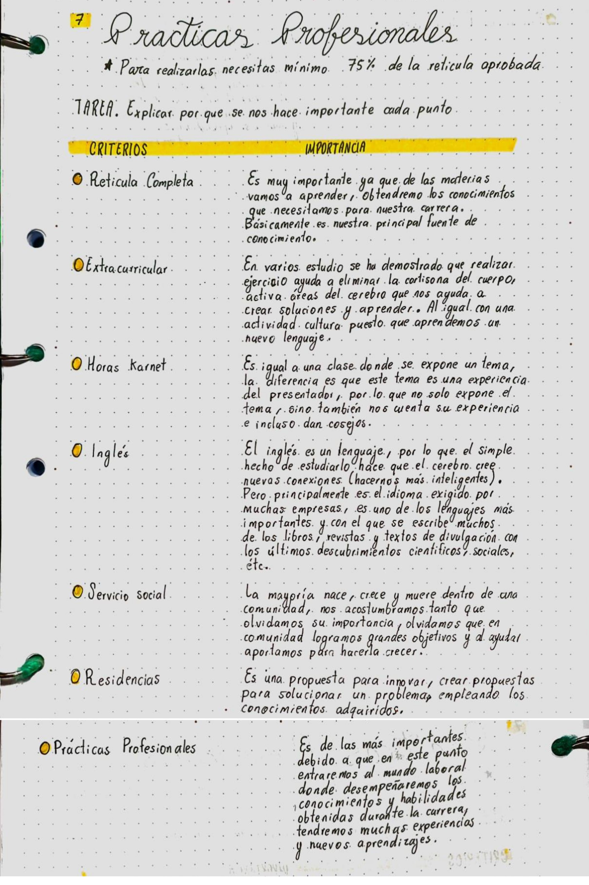
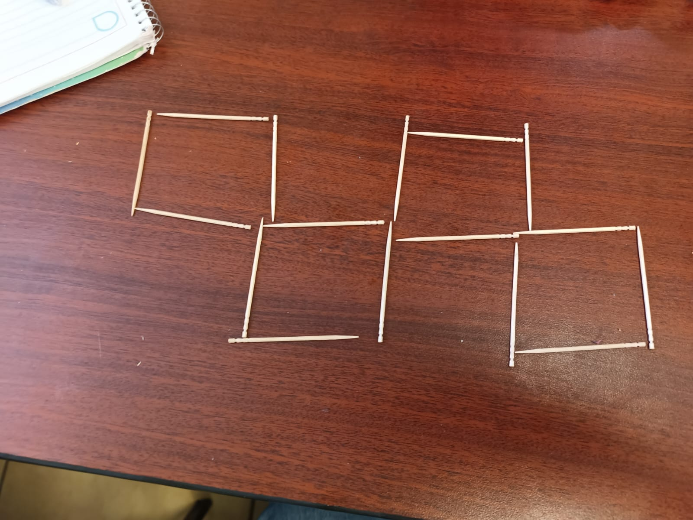
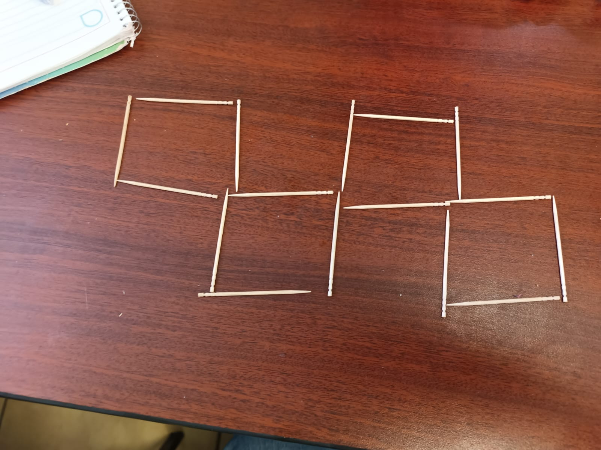

Portafolio de Evidencias
¿Qué es lo que espero del ITCJ?
Mi nombre es Edgar Pablo Lopez y provengo del CBTis 128, estudie programación por que me metí en la carrera de Ingeniera en Sistemas computacionales en ITCJ. Por lo que espero aprender mucho de mi carrera, he escuchado que tiene muy buenos profesores que más que enseñar por ganar dinero, lo hacen por la pasión de dar clases, de transmitir sus conocimientos y experiencias, espero enfrentarme pequeños retos que pongan a prueba mis conocimientows adquiridos, proyectos que me hagan esforzarme y desarrollar mis habilidades. Espero conocer muchas personas, personas que me ayuden a aprender, que me enseñen nuevos conocimientos a través de sus experiencias y de sus conocimientos, espero hacer grandes amigos.
Análisis FODA de acabar la carrera

¿Por qué quiero estudiar?
Quiero estudiar por que es algo que me gusta, me ayuda a crecer de manera intelectual, a adquirir nuevos conocimientos, a superarme a mi misno, quiero estudiar para poder tener mi titulo de Ingeniero. Quiero obtener un mejor puesto de trabajo con un mejor salario, un puesto de sisteams o programación, un trabajo relacionado con mi carrera, porque elegí esta carrera por que me gusta, al trabajar de algo que me gusta espero no batallar mucho o llegar a tener una alineación de mi trabajo. Quiero estudiar porque es una aventura que te lleva a muchos caminos, muchas oportunidades, experiencias tanto buenas como malas, pero sobre todo te ayuda a adquirir nuevos conocimientos.
¿Qué necesito para titularme?
EXAMEN DIAGNÓSTICO DEL CURSO
Cuestionario Hábitos de Estudio y Motivación para el Aprendizaje (H.E.M.A.)

En mi examen diagnóstico encontre que tengo un buen manejo de los factores ambientales a la hora de estudiar, esto es gracias cuento con mi escritorio propio, computadora en mi cuarto, pero además de eso, mi familia siempre me apoya cuando tengo examenes o proyectos, me suelen dejar solo en mi habitación y evitan hacer ruido, por otra parte mi salud física y emocional no son muy buenas, esto es debido a que a veces me obsecionó por las cosas y en algunos proyectos me enfocó tanto que dejo de comer, me la pasó enfrente de las computadora durante horas, lo cual es muy dañino, en mi métodos de estudio no estoy tan mal, pero puedo mejorar, esto es debido a que me la pasó estudiando por mi cuenta, pero no cuenta con una métodologia definida, cuando organizo mis planes y horarios, suelo planear mucho y pensar en las posibles variantes, por lo que suelo tener un mejor control de mis planes. Al aprender por mi cuenta y no contar con una metodología no sé buscar información de la manera correcta, hace poco entre a la biblioteca y no sé cómo está organizada ni cómo puedo hallar una información en específico. Tengo buenas comunicación oral, pero la escrita es la que tengo mayor problemas debidos a que no sé redactar correctamente, ni escribir de una manera coherente. Acerca de mi motivación para aprender, solo puedo decir que me gusta aprender, pero no veo algo por lo cual esforzarme más que por el hecho de aprender.
CONTRATO DE APRENDIZAJE


 
